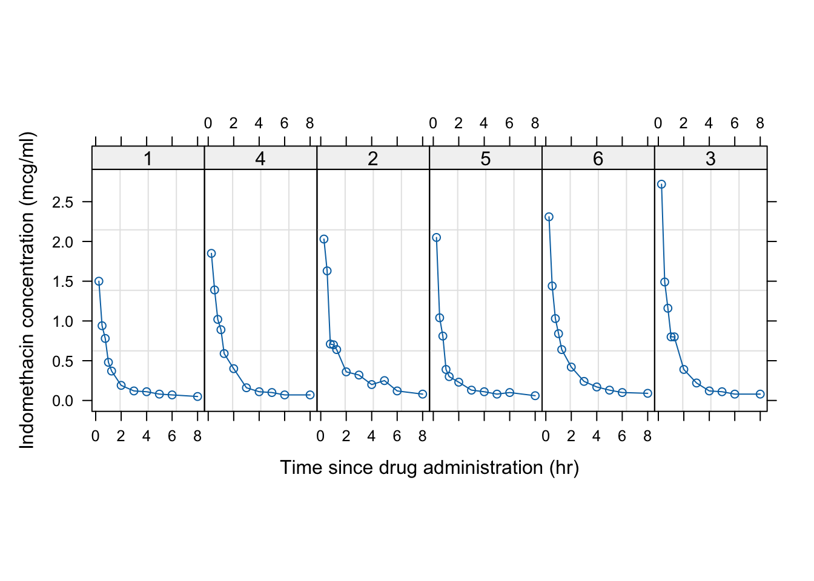
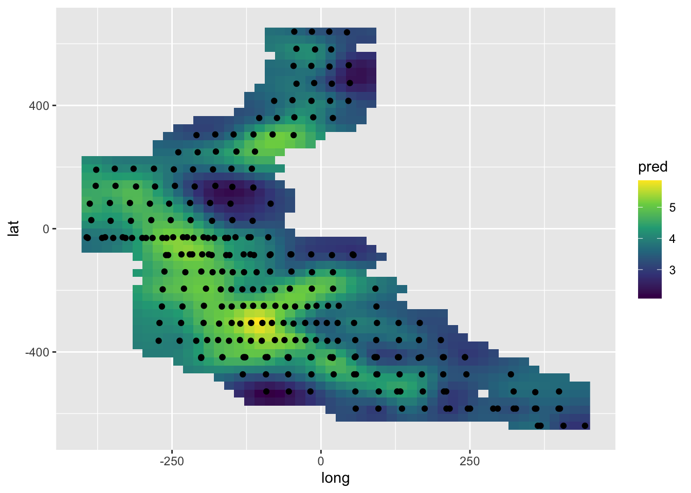

1.6 Non-linear mixed models
1.6.1 Indomethacin kinetics
Pharmacokinetics is an area where non-linear models arise naturally. In this experiment, six human volunteers were injected with identical doses of the drug indomethacin and their plasma concentrations of the drug (in mcg/ml) were subsequently measured at 11 time points until 8 hours post-injection. How should the decay of the drug, and the variation across volunteers, be modelled?
Source: Kwan, Breault, Umbenhauer, McMahon and Duggan (1976). Kinetics of Indomethicin absorption, elimination, and enterohepatic circulation in man. Journal of Pharmacokinetics and Biopharmaceutics, 4, 255-280.
A plot of the data is shown below. Notice that Indometh is a special class of object, known as a groupedData object, which has additional information on the grouping structure and that plot and other standard functions have methods which can make use of this.

Pharmacokinetics often uses compartmental models which result in descriptions of decay over time in the form of sums of exponential terms. For this example, two exponential terms should suffice. If \(y_{ij}\) denotes the measurement on individual \(i\) at time point \(j\), then \[ y_{ij} = \beta_{1i} \exp(-\beta_{2i} t_j) + \beta_{3i} \exp(-\beta_{4i} t_j) + \varepsilon_{ij}, ~~~~~~ \beta_2>0, \beta_4>0. \] In order to make the problem identifiable, we can insist that \(\beta_{2i} > \beta_{4i}\) for each \(i\).
The left hand plot below, shows the results of fitting a single regression model to all the data, while the right hand plot fits a separate regression for each subject.
##
## Formula: conc ~ SSbiexp(time, A1, lrc1, A2, lrc2)
##
## Parameters:
## Estimate Std. Error t value Pr(>|t|)
## A1 2.7734 0.2533 10.951 3.97e-16 ***
## lrc1 0.8864 0.2222 3.988 0.000178 ***
## A2 0.6067 0.2671 2.272 0.026598 *
## lrc2 -1.0919 0.4089 -2.671 0.009658 **
## ---
## Signif. codes: 0 '***' 0.001 '**' 0.01 '*' 0.05 '.' 0.1 ' ' 1
##
## Residual standard error: 0.1745 on 62 degrees of freedom
##
## Number of iterations to convergence: 0
## Achieved convergence tolerance: 3.304e-07ord <- order(Indometh$time)
plot(conc ~ time, col = as.numeric(Subject), data = Indometh)
lines(Indometh$time[ord], fitted(model)[ord], col = "blue", lwd = 3)
library(nlme)
model <- nlsList(conc ~ SSbiexp(time, A1, lrc1, A2, lrc2), data = Indometh)
summary(model)## Call:
## Model: conc ~ SSbiexp(time, A1, lrc1, A2, lrc2) | Subject
## Data: Indometh
##
## Coefficients:
## A1
## Estimate Std. Error t value Pr(>|t|)
## 1 2.029277 0.2023875 10.026695 3.388285e-07
## 4 2.198132 0.3155032 6.967067 7.942579e-06
## 2 2.827673 0.2311604 12.232517 3.536511e-04
## 5 3.566103 0.3245732 10.987053 5.630248e-06
## 6 3.002250 0.3503106 8.570251 3.069467e-07
## 3 5.468312 1.8759966 2.914884 1.087070e-02
## lrc1
## Estimate Std. Error t value Pr(>|t|)
## 1 0.5793887 0.2295508 2.5240107 2.347391e-03
## 4 0.2423123 0.2427792 0.9980769 1.402737e-01
## 2 0.8013195 0.1803742 4.4425402 5.193756e-02
## 5 1.0407660 0.1636874 6.3582534 1.986106e-04
## 6 1.0882119 0.2564197 4.2438696 3.504364e-05
## 3 1.7497936 0.3108862 5.6284057 2.937754e-04
## A2
## Estimate Std. Error t value Pr(>|t|)
## 1 0.1915475 0.2037201 0.9402482 0.1269759988
## 4 0.2545222 0.3716832 0.6847828 0.2914158845
## 2 0.4989175 0.1822390 2.7377104 0.1927034076
## 5 0.2914970 0.1592207 1.8307727 0.0811792825
## 6 0.9685230 0.2905245 3.3337056 0.0001646898
## 3 1.6757521 0.2814723 5.9535238 0.0002075745
## lrc2
## Estimate Std. Error t value Pr(>|t|)
## 1 -1.7877849 1.4495070 -1.233374 0.0573694838
## 4 -1.6026861 1.4786610 -1.083877 0.1138960188
## 2 -1.6353512 0.4779239 -3.421781 0.1146481993
## 5 -1.5068522 0.7133811 -2.112268 0.0511506019
## 6 -0.8731359 0.2715939 -3.214858 0.0002066297
## 3 -0.4122004 0.1680153 -2.453351 0.0232031737
##
## Residual standard error: 0.0755502 on 42 degrees of freedomplot(conc ~ time, col = as.numeric(Subject), data = Indometh)
with(Indometh, {
for (i in 1:6)
lines(time[Subject == i], fitted(model)[Subject == i], col = i, lwd = 3)})
A random effects model can be constructed as \[ y_{ij} = (\beta_{1} + b_{1i}) \exp(-\exp(\beta_{2} + b_{2i}) \, t_j) + (\beta_{3} + b_{3i}) \exp(-\exp(\beta_{4} + b_{4i}) \, t_j) + \varepsilon_{ij}, \] where the additional use of \(\exp\) ensures that the coefficients inside the original \(\exp\) terms are positive.
## Nonlinear mixed-effects model fit by maximum likelihood
## Model: conc ~ SSbiexp(time, A1, lrc1, A2, lrc2)
## Data: Indometh
## AIC BIC logLik
## -91.19342 -71.48653 54.59671
##
## Random effects:
## Formula: list(A1 ~ 1, lrc1 ~ 1, A2 ~ 1, lrc2 ~ 1)
## Level: Subject
## Structure: Diagonal
## A1 lrc1 A2 lrc2 Residual
## StdDev: 0.5714106 0.1580778 0.1115978 8.172354e-06 0.08149341
##
## Fixed effects: list(A1 ~ 1, lrc1 ~ 1, A2 ~ 1, lrc2 ~ 1)
## Value Std.Error DF t-value p-value
## A1 2.8275372 0.2640124 57 10.709866 0e+00
## lrc1 0.7736221 0.1100261 57 7.031262 0e+00
## A2 0.4614716 0.1128084 57 4.090755 1e-04
## lrc2 -1.3441022 0.2310754 57 -5.816725 0e+00
## Correlation:
## A1 lrc1 A2
## lrc1 0.055
## A2 -0.102 0.630
## lrc2 -0.139 0.577 0.834
##
## Standardized Within-Group Residuals:
## Min Q1 Med Q3 Max
## -3.1733831 -0.3562727 -0.1285253 0.3423165 3.0025096
##
## Number of Observations: 66
## Number of Groups: 6
The Pinheiro & Bates book suggests some further amendments to the random effects and variance structure of the model.
1.6.2 Growth of Soyabean plants
In this experiment, eight plots were planted with each of two strains of soyabean in each of three years. The data record the average leaf weight (in gms) of six plants chosen at random from each plot.
What are the principal sources of variation in the data?
Source: Davidian and Giltinan (1995, 1.1.3, p.7): ``Data from an experiment to compare growth patterns of two genotypes of soybeans: Plant Introduction #416937 (P), an experimental strain, and Forrest (F), a commercial variety.’’

For a single plant, a suitable model is provided by a logistic growth curve, namely \[ y = \frac{\phi_1}{1 + \exp[-(t-\phi_2) / \phi_3]} + \varepsilon . \]
## Warning: 2 errors caught in nls(y ~ 1/(1 + exp((xmid - x)/scal)), data = xy, start = list(xmid = aux[[1L]], scal = aux[[2L]]), algorithm = "plinear", ...). The error messages and their frequencies are
##
## number of iterations exceeded maximum of 50
## 1
## step factor 0.000488281 reduced below 'minFactor' of 0.000976562
## 1## Call:
## Model: weight ~ SSlogis(Time, Asym, xmid, scal) | Plot
## Data: Soybean
##
## Coefficients:
## Asym
## Estimate Std. Error t value Pr(>|t|)
## 1988F4 15.151550 0.8738054 17.3397311 4.463275e-07
## 1988F2 19.745419 1.9433542 10.1604842 3.794022e-07
## 1988F1 20.338407 2.2589870 9.0033309 6.127446e-08
## 1988F7 19.871203 1.7791330 11.1690376 5.679788e-06
## 1988F5 30.648921 11.2081166 2.7345291 3.736542e-03
## 1988F8 22.777043 2.4318953 9.3659634 2.360279e-07
## 1988F6 23.293137 2.7299845 8.5323331 7.581537e-09
## 1988F3 23.697110 1.5879718 14.9228787 3.597063e-07
## 1988P1 17.300492 0.8640908 20.0216145 1.013670e-08
## 1988P5 17.703754 1.0257602 17.2591548 3.921123e-09
## 1988P4 24.008910 2.9706375 8.0820733 3.017103e-03
## 1988P8 28.249591 4.1988040 6.7280090 2.276684e-05
## 1988P7 27.485995 3.3945416 8.0971155 1.342293e-08
## 1988P3 24.939006 1.7455364 14.2873025 1.631779e-05
## 1988P2 36.661157 6.3486880 5.7746036 2.477012e-02
## 1988P6 163.702943 255.3305201 0.6411413 8.337208e-01
## 1989F6 8.509308 1.3635636 6.2404919 5.729740e-05
## 1989F5 9.669081 0.9877562 9.7889350 2.180771e-05
## 1989F4 11.247524 1.0049236 11.1924170 7.984003e-08
## 1989F1 11.251052 1.1113040 10.1241894 7.711603e-05
## 1989F2 11.233333 0.9989299 11.2453664 6.475196e-09
## 1989F7 10.071395 0.8452311 11.9155512 3.415717e-05
## 1989F8 10.609519 0.8302693 12.7784076 1.450821e-05
## 1989F3 18.419564 2.6808047 6.8709085 6.092551e-06
## 1989P7 15.471897 0.7861292 19.6811114 8.869028e-07
## 1989P4 18.177522 1.4204479 12.7970351 7.262489e-07
## 1989P6 20.498831 1.9022691 10.7759887 5.129594e-06
## 1989P5 NA NA NA NA
## 1989P1 21.683985 1.9183399 11.3035157 7.806236e-08
## 1989P3 22.283750 1.1402473 19.5429100 4.478139e-07
## 1989P2 28.296972 4.1482952 6.8213495 1.561728e-04
## 1989P8 NA NA NA NA
## 1990F2 19.459102 6.1238316 3.1776024 1.175660e-03
## 1990F3 19.867932 3.2357524 6.1401275 6.112667e-04
## 1990F4 27.435518 9.4505666 2.9030554 2.326747e-03
## 1990F5 18.719501 1.2575853 14.8852735 2.425467e-07
## 1990F1 19.790735 1.9241287 10.2855567 3.680484e-04
## 1990F8 20.290441 1.5158389 13.3856186 4.113934e-05
## 1990F7 19.835326 1.3061649 15.1859283 1.585581e-06
## 1990F6 21.197115 1.7368414 12.2044041 8.578174e-06
## 1990P8 18.513513 1.4497108 12.7704867 3.942441e-04
## 1990P7 19.160767 2.1203103 9.0367749 2.394577e-04
## 1990P3 19.198083 1.3929487 13.7823336 9.374480e-05
## 1990P1 18.448379 0.9806108 18.8131507 1.488721e-06
## 1990P6 17.689700 1.0685907 16.5542331 1.302191e-04
## 1990P5 19.544895 1.1900419 16.4237025 8.984246e-05
## 1990P2 25.787243 3.8482487 6.7010333 1.186730e-05
## 1990P4 26.128904 3.2551064 8.0270509 1.385877e-03
## xmid
## Estimate Std. Error t value Pr(>|t|)
## 1988F4 52.83408 1.332907 39.638245 1.445923e-09
## 1988F2 56.57507 2.769461 20.428185 5.866605e-09
## 1988F1 57.40242 3.006916 19.090129 3.277052e-10
## 1988F7 56.16159 2.494661 22.512709 8.925168e-08
## 1988F5 64.12999 9.123542 7.029067 4.563191e-05
## 1988F8 59.33033 2.684914 22.097664 6.076840e-10
## 1988F6 59.59762 3.078580 19.358801 2.491787e-11
## 1988F3 56.42461 1.631701 34.580236 1.056373e-09
## 1988P1 48.84945 1.347844 36.242652 1.617368e-10
## 1988P5 51.27156 1.512099 33.907531 3.516647e-11
## 1988P4 57.75124 3.788656 15.243199 6.825981e-05
## 1988P8 62.98014 4.006304 15.720259 7.127107e-08
## 1988P7 61.49839 3.239559 18.983567 3.518826e-11
## 1988P3 56.32520 1.781868 31.610200 7.333808e-08
## 1988P2 66.56077 4.701583 14.157098 2.150756e-04
## 1988P6 104.97349 37.998150 2.762595 3.790336e-01
## 1989F6 55.27332 5.345507 10.340144 4.786636e-06
## 1989F5 51.26706 3.391918 15.114475 2.551122e-06
## 1989F4 53.81049 2.669678 20.156176 4.228986e-09
## 1989F1 56.62630 2.721298 20.808560 2.227069e-06
## 1989F2 52.24016 2.860031 18.265595 5.733555e-10
## 1989F7 51.37754 2.538522 20.239155 2.503115e-06
## 1989F8 47.96772 2.653212 18.079114 2.608897e-06
## 1989F3 66.12355 4.004286 16.513193 7.770932e-08
## 1989P7 46.34313 1.748791 26.500094 2.015245e-07
## 1989P4 57.18041 2.458381 23.259378 3.691032e-08
## 1989P6 58.23818 3.195134 18.227147 3.766450e-07
## 1989P5 NA NA NA NA
## 1989P1 59.69305 2.877246 20.746595 3.760304e-09
## 1989P3 53.39565 1.685346 31.682313 4.022773e-08
## 1989P2 67.17505 4.816749 13.946141 4.718717e-06
## 1989P8 NA NA NA NA
## 1990F2 66.28541 10.062524 6.587355 3.658736e-05
## 1990F3 58.27752 5.679501 10.261027 5.243495e-05
## 1990F4 70.27180 11.183796 6.283358 6.217567e-05
## 1990F5 51.27603 1.979733 25.900474 1.528310e-08
## 1990F1 55.69340 3.010641 18.498849 2.156924e-05
## 1990F8 55.54949 2.120896 26.191526 1.497685e-06
## 1990F7 54.73623 1.806128 30.305834 5.068892e-08
## 1990F6 54.56184 2.526903 21.592380 5.054519e-07
## 1990P8 52.44794 2.384233 21.997824 2.862984e-05
## 1990P7 54.80233 3.662114 14.964672 2.073748e-05
## 1990P3 49.71495 2.322466 21.406105 1.087806e-05
## 1990P1 47.91706 1.467730 32.647045 9.558243e-08
## 1990P6 50.23032 1.676583 29.959941 7.154673e-06
## 1990P5 51.15028 1.753041 29.178025 5.361917e-06
## 1990P2 62.35966 4.676813 13.333794 3.906739e-07
## 1990P4 61.19885 3.832619 15.967893 5.339368e-05
## scal
## Estimate Std. Error t value Pr(>|t|)
## 1988F4 5.176820 1.091749 4.741768 1.854692e-03
## 1988F2 8.406559 1.736041 4.842373 2.948576e-05
## 1988F1 9.604743 1.723335 5.573345 1.654535e-06
## 1988F7 8.069281 1.632197 4.943814 5.772665e-04
## 1988F5 11.262835 2.789211 4.038001 6.472908e-04
## 1988F8 9.000647 1.511850 5.953399 5.185132e-06
## 1988F6 9.718840 1.633690 5.949010 9.256229e-08
## 1988F3 7.642380 1.104895 6.916837 6.251672e-05
## 1988P1 6.362358 1.091349 5.829810 4.497602e-05
## 1988P5 6.809096 1.176508 5.787547 7.181926e-06
## 1988P4 11.744706 1.893425 6.202889 1.135466e-02
## 1988P8 10.947130 1.749418 6.257583 3.661666e-05
## 1988P7 10.177799 1.561879 6.516380 6.056751e-08
## 1988P3 8.315917 1.151803 7.219912 1.167177e-03
## 1988P2 11.916113 1.711035 6.964271 1.092030e-02
## 1988P6 17.929681 3.017031 5.942822 8.315878e-02
## 1989F6 8.856063 3.535774 2.504702 3.994054e-03
## 1989F5 7.205896 2.373316 3.036215 5.159590e-03
## 1989F4 6.486573 2.153628 3.011928 5.325839e-05
## 1989F1 6.068136 2.374275 2.555784 3.089681e-02
## 1989F2 7.016427 2.076585 3.378829 2.598127e-06
## 1989F7 5.500159 1.926244 2.855381 2.054614e-02
## 1989F8 5.960926 1.718186 3.469314 6.366473e-03
## 1989F3 9.224764 2.337292 3.946775 9.227941e-05
## 1989P7 5.393890 1.125755 4.791354 8.574281e-04
## 1989P4 8.402098 1.676272 5.012370 7.397974e-05
## 1989P6 10.613533 1.854108 5.724333 1.138299e-04
## 1989P5 NA NA NA NA
## 1989P1 9.972837 1.717799 5.805590 2.155525e-06
## 1989P3 7.900595 1.179248 6.699689 8.814552e-05
## 1989P2 12.523509 2.108665 5.939068 3.025485e-04
## 1989P8 NA NA NA NA
## 1990F2 13.157219 3.660268 3.594605 6.661875e-04
## 1990F3 12.796287 2.697127 4.744413 1.984977e-03
## 1990F4 14.560188 3.415482 4.262996 3.997895e-04
## 1990F5 7.758448 1.379453 5.624293 3.012976e-05
## 1990F1 9.617031 1.745763 5.508782 6.062151e-03
## 1990F8 7.771085 1.327913 5.852106 2.041157e-03
## 1990F7 6.792194 1.185178 5.730947 1.887271e-04
## 1990F6 9.263610 1.528612 6.060144 2.589908e-04
## 1990P8 8.581012 1.561491 5.495395 1.537997e-02
## 1990P7 10.847282 2.066123 5.250066 2.908553e-03
## 1990P3 9.322305 1.585599 5.879358 4.746622e-03
## 1990P1 6.611841 1.153215 5.733397 4.896358e-04
## 1990P6 6.626907 1.260483 5.257433 2.008824e-02
## 1990P5 7.293155 1.249137 5.838557 9.704477e-03
## 1990P2 11.656924 2.055390 5.671392 2.695022e-05
## 1990P4 10.971539 1.804042 6.081642 4.695487e-03
##
## Residual standard error: 1.020867 on 258 degrees of freedom## Nonlinear mixed-effects model fit by maximum likelihood
## Model: weight ~ SSlogis(Time, Asym, xmid, scal)
## Data: Soybean
## AIC BIC logLik
## 1499.667 1539.877 -739.8334
##
## Random effects:
## Formula: list(Asym ~ 1, xmid ~ 1, scal ~ 1)
## Level: Plot
## Structure: General positive-definite, Log-Cholesky parametrization
## StdDev Corr
## Asym 5.200901 Asym xmid
## xmid 4.196831 0.721
## scal 1.403870 0.711 0.959
## Residual 1.123523
##
## Fixed effects: list(Asym ~ 1, xmid ~ 1, scal ~ 1)
## Value Std.Error DF t-value p-value
## Asym 19.25327 0.8031654 362 23.97173 0
## xmid 55.02013 0.7272192 362 75.65825 0
## scal 8.40362 0.3152159 362 26.65989 0
## Correlation:
## Asym xmid
## xmid 0.724
## scal 0.620 0.807
##
## Standardized Within-Group Residuals:
## Min Q1 Med Q3 Max
## -6.08622486 -0.22174770 -0.03385948 0.29741199 4.84515226
##
## Number of Observations: 412
## Number of Groups: 48## Warning in (function (model, data = sys.frame(sys.parent()), fixed, random, :
## Iteration 1, LME step: nlminb() did not converge (code = 1). Do increase
## 'msMaxIter'!## Warning in (function (model, data = sys.frame(sys.parent()), fixed, random, :
## Iteration 6, LME step: nlminb() did not converge (code = 1). PORT message:
## false convergence (8)## Model df AIC BIC logLik Test L.Ratio p-value
## model 1 10 1499.6668 1539.8770 -739.8334
## model1 2 11 745.7109 789.9421 -361.8554 1 vs 2 755.9559 <.0001plot(model1)
plot(ranef(model1, augFrame = TRUE), form = ~ Year * Variety)
soyFix <- fixef(model1)
model2 <- update(model1, fixed = Asym + xmid + scal ~ Year,
start = c(soyFix[1], 0, 0, soyFix[2], 0, 0, soyFix[3], 0, 0))## Warning in (function (model, data = sys.frame(sys.parent()), fixed, random, :
## Iteration 1, LME step: nlminb() did not converge (code = 1). Do increase
## 'msMaxIter'!## Warning in (function (model, data = sys.frame(sys.parent()), fixed, random, :
## Iteration 6, LME step: nlminb() did not converge (code = 1). PORT message:
## false convergence (8)## numDF denDF F-value p-value
## Asym.(Intercept) 1 356 2057.327 <.0001
## Asym.Year 2 356 102.871 <.0001
## xmid.(Intercept) 1 356 11420.367 <.0001
## xmid.Year 2 356 9.436 1e-04
## scal.(Intercept) 1 356 7967.388 <.0001
## scal.Year 2 356 11.064 <.0001
1.6.3 Phenobarbital kinetics
In this study, 59 preterm infants who had received injections of phenobarbital were monitored at irregular intervals to determined blood concentrations of the drug. In addition to information on concentration and dose, birth weight and Apgar score were also recorded.
Again, what are the principal sources of variation in the data?
Pharmacokinetic theory suggests that a suitable model for an individual is \[ y(t) = \sum_{d:t_d < t} \frac{D_d}{V} \exp \left[ - \frac{Cl}{V} (t - t_d) \right] . \]